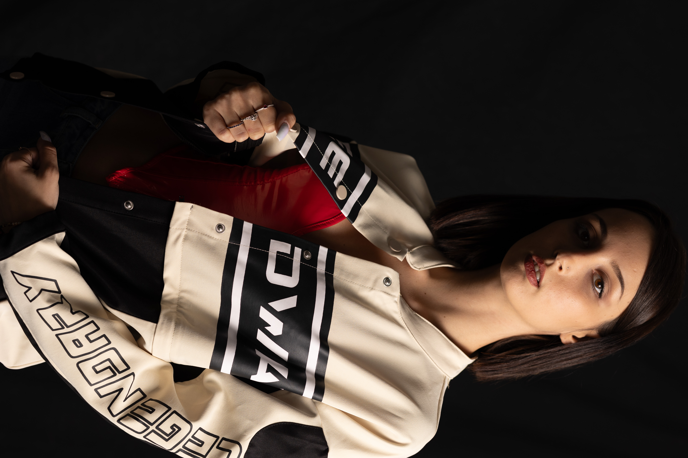

📞
Telefono
boo numero
booooo orari

Contattami per informazioni, appuntamenti o richieste personalizzate.
boo numero
booooo orari
info@sarastudio.it
Risposta entro 24h
booooooooooooo
00000 booo

Ciao, sono Sara Latini
Libero le aziende dalla burocrazia e dal caos amministrativo, così che possano concentrarsi solo sulla loro crescita.
Sono una consulente amministrativa in outsourcing e mi occupo di gestione del back-office e supporto amministrativo completamente da remoto.
Lavoro principalmente con aziende italiane e spagnole, muovendomi con disinvoltura tra settori completamente diversi: dalla moda all’edilizia,
fino al turismo. Non importa quale sia il tuo business; le regole di un’amministrazione efficiente e senza intoppi sono universali.
Il mio superpotere? Risolvere problemi.
Se c’è una cosa che mi definisce, è che non mi arrendo mai. Qualcuno la chiama testardaggine, io preferisco definirla determinazione assoluta.
Quando si presenta un problema o un imprevisto burocratico, non mi fermo finché non ho trovato la soluzione perfetta. Per me non esistono vicoli
ciechi, solo sfide che richiedono la giusta strategia.
Affidare a me il tuo back-office significa avere una partner affidabile, precisa e flessibile, capace di gestire la macchina amministrativa da
remoto con la stessa presenza e cura di una risorsa in ufficio.
Mettiamo d'accordo i tuoi numeri?
Se la gestione amministrativa ti toglie tempo ed energia, troviamo insieme la soluzione adatta alla tua azienda
Clienti soddisfatti
Supporto dedicato
Progetti completati